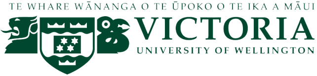

The Wyvern Programming Language
Wyvern is a new programming language designed to help developers be highly productive when writing high-assurance applications. The first major innovation in Wyvern is type-specific languages, a feature that allows programmers to create literals of a given type (e.g. a SQLQuery type) in a language appropriate to that type (e.g. SQL). We are currently working on the Wyvern object model and on providing architects with more architectural control.The ongoing implementation of Wyvern is available on GitHub. We have also written a manifesto and related talk slides describing the goals and core ideas behind the design of the language.
Giving Wyvern a Go
You can download a recent (3/25/18) release here and after unzipping run thebin/wyvernor
bin/wypydepending on whether you want the interpreter or a Wyvern to Python compiler. Try the examples in the
examplesfolder or follow the Wyvern Guide. To build Wyvern and possibly make changes to the language tools, follow the instructions in the Wyvern Tool Architecture document.
Publications Related to Wyvern
- Decidable subtyping for path dependent types. Julian Mackay, Alex Potanin, Jonathan Aldrich, and Lindsay Groves. Proc. Principles of Programming Languages (POPL), January 2020.
- A Capability-Based Module System for Authority Control. Darya Melicher, Yangqingwei Shi, Alex Potanin, and Jonathan Aldrich. Proc. European Conference on Object-Oriented Programming (ECOOP), June 2017.
- A Theory of Tagged Objects. Joseph Lee, Jonathan Aldrich, Troy Shaw, and Alex Potanin. Proc. European Conference on Object-Oriented Programming (ECOOP), 2015.
- Composable and Hygienic Typed Syntax Macros. Cyrus Omar, Chenglong Wang, and Jonathan Aldrich. Proc. Symposium on Applied Computing (SAC), 2015.
- Delegation vs. Inheritance for Typestate Analysis. Du Li, Alex Potanin, and Jonathan Aldrich. In Proceedings of Formal Techniques for Java Like Programs (FTfJP), 2015.
- Wyvern: Impacting Software Security via Programming Language Design. Darya Kurilova, Alex Potanin, and Jonathan Aldrich. Proc. Evaluation and Usability of Programming Languages and Tools (PLATEAU), 2014.
- Safely Composable Type-Specific Languages. Cyrus Omar, Darya Kurilova, Ligia Nistor, Benjamin Chung, Alex Potanin, and Jonathan Aldrich. Proc. European Conference on Object-Oriented Programming, 2014.
- Language-Based Architectural Control. Jonathan Aldrich, Cyrus Omar, Alex Potanin, and Du Li. In International Workshop on Aliasing, Capabilities, and Ownership (IWACO '14), 2014.
- Wyvern: A Simple, Typed, and Pure Object-Oriented Language. Ligia Nistor, Darya Kurilova, Stephanie Balzer, Benjamin Chung, Alex Potanin, and Jonathan Aldrich. In Mechanisms for Specialization, Generalization, and Inheritance (MASPEGHI), 2013.
- Type-Directed, Whitespace-Delimited Parsing for Embedded DSLs. Cyrus Omar, Benjamin Chung, Darya Kurilova, Alex Potanin, and Jonathan Aldrich. In Globalization of Domain Specific Languages (GlobalDSL), 2013.
People
Carnegie Mellon University

- Jonathan Aldrich (academic staff)
- Darya Melicher
- Selva Samuel
- Alice Oh
- Alex Gao
Victoria University of Wellington
- Alex Potanin (academic staff)
- Julian Mackay
- Tu Dinh
- Andre Westerlund
Past project members
- Aaron Craig
- Stephanie Balzer
- Benjamin Chung
- Joseph Lee
- Du Li
- Robbie McKinstry
- Ligia Nistor
- Cyrus Omar
- Mitchell Plamann
- Troy Shaw
- Chenglong Wang
- Valerie Zhao